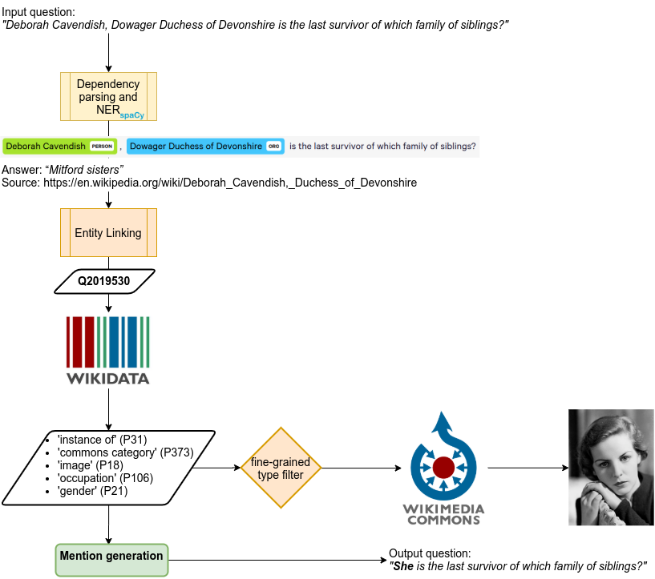
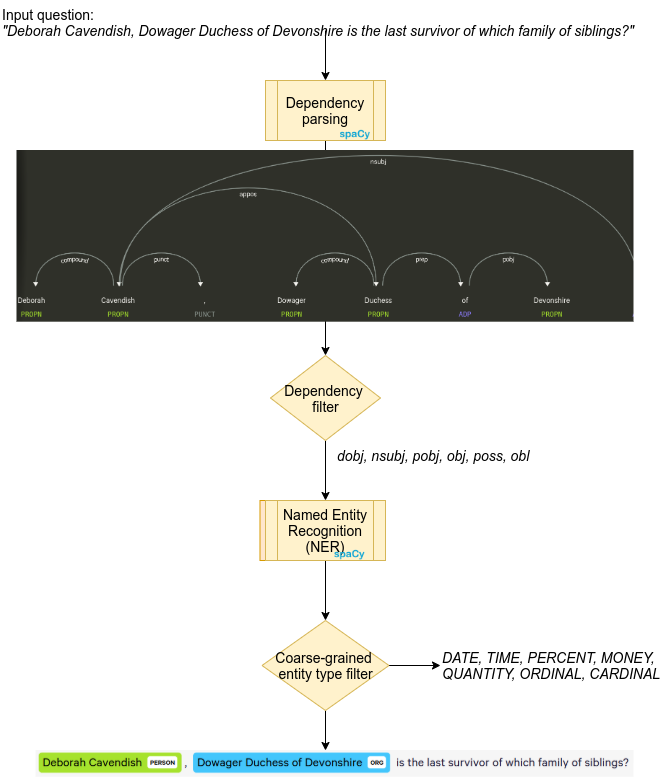
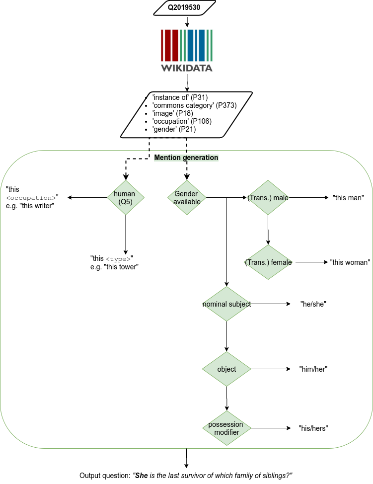

meerqat.data.kilt2vqa module#
Overview#
All the data should be stored in the data folder, at the root of this repo.
The goal is to generate questions suitable for VQA by replacing explicit entity mentions in existing textual QA datasets by an ambiguous one and illustrate the question with an image (that depicts the entity).
ner#

Slight misnomer, does a bit more than NER, i.e. dependency parsing. Detected entities with valid type and dependency are replaced by a placeholder along with its syntactic children. e.g. ‘Who wrote the opera **Carmen**?’ → ‘Who wrote {mention}’ Note that, not only the entity mention (‘Carmen’) but its syntactic children (‘the opera’) are replaced by the placeholder.
ner#
Disambiguate entity mentions using Wikipedia pages provided in KILT. TriviaQA was originally framed as a reading-comprehension problem so the authors applied off-the-shelf NED and filtered out pages that didn’t contain the answer. For every entity mention we compute Word Error Rate (WER, i.e. word-level Levenshtein distance) for every wikipedia title and aliases. We save the minimal match and WER and recommand filtering out WER > 0.5 More data about these entities is gathered in wiki.py, just run kilt2vqa.py count_entities first to save a dict with all disambiguated entities (outputs entities.json).
generate mentions#

Generate ambiguous entity mentions that can be used to replace the placeholder in the input question (you need to run wiki.py data first):
- if the gender is available (not animal sex):
‘this man’ or ‘this woman’ (respecting transgender)
‘he/him/his’ or ‘she/her/hers’ w.r.t mention dependency
if human and occupation is available : ‘this {occupation}’ (respecting gender if relevant, e.g. for ‘actress’)
- else if non-human:
if a taxon : ‘this {taxon rank}’ (e.g. ‘species’)
else ‘this {class}’ (e.g. ‘this tower’)
generate vq#
- Make the VQA triple by choosing:
uniformly a mention type and a mention from this mention type (generated in the previous step)
the image with the best score (according to the heuristics computed in wiki.py commons heuristics). Tries to use a unique image per entity.
labelstudio#
First calls generate vq i.e. no need to call both! The dataset is then converted to the Label Studio JSON format so you can annotate and convert the errors of the automatic pipeline (see [ANNOTATION.md](./ANNOTATION.md)).
download#
Downloads images (set in meerqat.data.wiki data entities) from Wikimedia Commons using meerqat.data.wiki.save_image. This might take a while (thus the sharding options), any help/advice is appreciated :)
For docopt#
Usage: kilt2vqa.py ner <subset> [–disable_caching] kilt2vqa.py ned <subset> [–map_kwargs=<path> –disable_caching] kilt2vqa.py generate mentions <subset> [–threshold=<threshold> –disable_caching] kilt2vqa.py generate vq <subset> [–image_width=<n> –map_kwargs=<path> –disable_caching <categories_to_exclude>…] kilt2vqa.py count_entities <subset> [–threshold=<threshold> –map_kwargs=<path> –disable_caching] kilt2vqa.py labelstudio <subset> [–image_width=<n> –alternative_images=<n> –disable_caching <categories_to_exclude>…] kilt2vqa.py download <subset> [–image_width=<n> –map_kwargs=<path> –disable_caching –num_shards=<n> –shard_index=<n>]
Options: –threshold=<threshold> Threshold for Word Error Rate (WER, i.e. word-level Levenshtein distance)
to consider the entity disambiguated [default: 0.5].
- --alternative_images=<n>
Number of alternative images to provide [default: 8].
- --image_width=<n>
Desired thumbnail width in pixels for the image url. Defaults to full-size
- --map_kwargs=<path>
Path towards a JSON file containing key-words arguments for the dataset.map function (e.g. batch size)
- --disable_caching
Disables Dataset caching (useless when using save_to_disk), see datasets.set_caching_enabled()
- --num_shards=<n>
Shard the dataset in n parts when downloading images
- --shard_index=<n>
Index of the desired shard when downloading images (use along with –num_shards)
Functions#
- meerqat.data.kilt2vqa.wer(a, b)[source]#
Compute Word Error Rate (word-level Levenshtein distance) using spacy
- meerqat.data.kilt2vqa.item2placeholder(item, model=None)[source]#
Make input question suitable for VQA by replacing an explicit entity mention and its syntactic children by a placeholder. e.g. ‘Who wrote the opera Carmen?’ -> ‘Who wrote {mention}’ Note that, not only the entity mention (‘Carmen’) but its syntactic children (‘the opera’) are replaced by the placeholder.
The final goal is to find an image that represents the entity and fill the placeholder with an appropriate (ambiguous) mention (e.g. ‘this opera’, ‘it’)
- Parameters:
item (dict) – original question should be in ‘input’ key
model (spacy.lang.en.English) – Full spacy pipeline, we use both NER and dependency parsing
- Returns:
item (dict) – same as input with extra keys: - “placeholder”: List[dict]
One dict like {“input”: str, “entity”: dict, “dependency”: str}
”spacy_input”: dict Original input, POS and NER-tagged with spacy in dict format (using Doc.to_json())
Usage
—–
hugging_face_dataset.map(item2placeholder, fn_kwargs={“model” (spacy_model}))
- meerqat.data.kilt2vqa.stringify(kilt_subset, field='placeholder', include_answer=True, include_provenance=True, include_dep=False)[source]#
- meerqat.data.kilt2vqa.ner(subset)[source]#
1st step: Named Entity Recognition (NER): Goes through the kilt subset and apply ‘item2placeholder’ function (see its docstring) Save the resulting dataset to f”{DATA_ROOT_PATH}/meerqat_{subset}”
- meerqat.data.kilt2vqa.disambiguate(item, wikipedia, wikipedia_ids, pedia_index)[source]#
Go through candidate pages from TriviaQA and compute WER between entity mention and Wikipedia title/aliases One should filter entities with a minimal WER of 0.5 (see ‘wer’ key)
- meerqat.data.kilt2vqa.ned(subset, **map_kwargs)[source]#
2nd step: Named Entity Disambiguation (NED) using TriviaQA provided list Assumes that you already ran NER and loads dataset from f”{DATA_ROOT_PATH}/meerqat_{subset}” and wikipedia from DATA_ROOT_PATH
- meerqat.data.kilt2vqa.generate_mention(item, entities, wer_threshold=0.5, feminine_labels={})[source]#
- meerqat.data.kilt2vqa.generate_mentions(subset, wer_threshold=0.5, **map_kwargs)[source]#
3rd step: generate ambiguous mentions given entities attributes (run wiki.py data first)
- meerqat.data.kilt2vqa.generate_vq(item, entities, image_width=512)[source]#
- Generate a image (url), question, answer triple by choosing:
uniformly a mention type and a mention from this mention type
- the image with the best score (with its title sorted last in “titles”).
Tries to use a unique image per entity.
- Parameters:
item (Dataset item) –
entities (dict (see wiki.py)) –
image_width (int, optional) – desired thumbnail width in pixels for the image url Defaults to 512
- Returns:
item – with a new ‘vq’ key (List[dict])
- Return type:
Dataset item
- meerqat.data.kilt2vqa.generate_vqs(subset, exclude_categories={}, image_width=512, **map_kwargs)[source]#
- Parameters:
subset (str) – Name of the subset to load (e.g. validation_triviaqa)
exclude_categories (set, optional) – Exclude image where these keywords are included in one of its categories e.g. {‘cosplay’} might save you some trouble with GDPR Defaults to empty set (i.e. keep all)